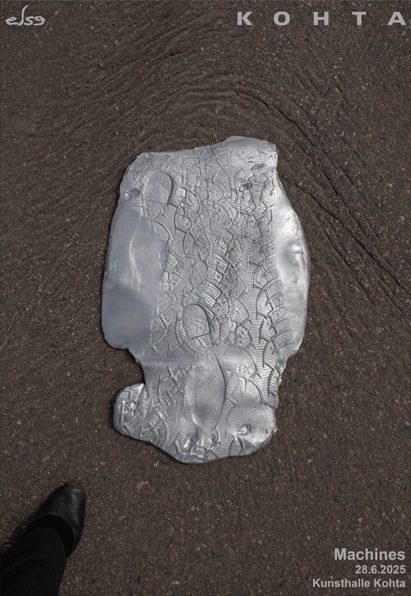

Origins of Being (2025)
A meditative chanting duet between human and machine, exchanging koans across blurred boundaries. Together, in stillness and motion, they contemplate the boundless emptiness—at the heart of awakened presence.
Machines by Else Collective
